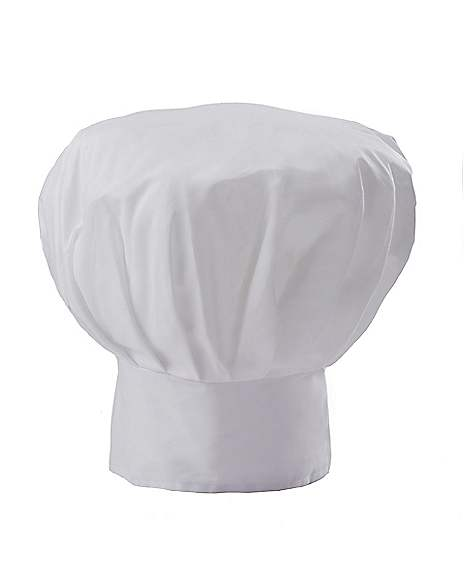

Blade's Recipes
My Goals:
I've created this website to try and pass my midterms while also creating a small repository for the food I enjoy making.
Composition of Website:
I've set the website up so that beyond this index page you'll encounter two similar recipes that link between each other and then back to here. You'll notice an ordered and unordered list apiece as well as the requisite pictures.